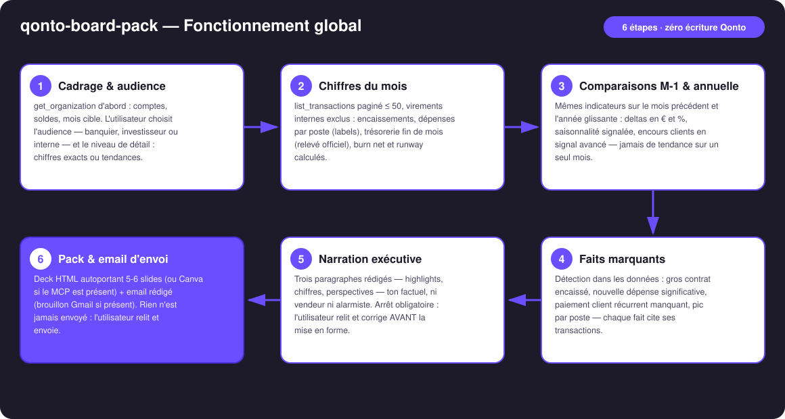
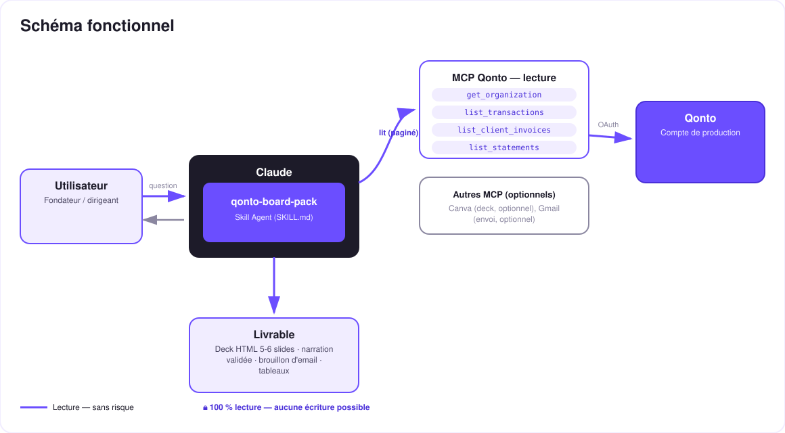

Le rapport mensuel investisseurs, prêt avant la fin de ton café — chiffres, faits marquants, narration, deck et email.
Le rapport mensuel investisseurs/banquier, c'est la tâche que tout fondateur repousse au dernier soir. Un prompt → le pack complet, pendant que tu regardes :
Encaissements, dépenses par poste, trésorerie fin de mois (relevé officiel), burn net et runway — depuis le compte Qonto réel.
M-1 et année glissante : deltas en € et %, saisonnalité signalée, encours clients en signal avancé.
Gros contrat encaissé, nouvelle dépense significative, client habituel absent — chaque fait cite ses transactions.
3 § factuels que tu relis AVANT la mise en forme, puis deck HTML 5-6 slides (ou Canva) + email d'envoi (brouillon Gmail).
Et la confidentialité est une feature : banquier, investisseur et équipe interne ne reçoivent pas le même pack — tu choisis l'audience et le niveau de détail.
| Prérequis | Détail | Obligatoire |
|---|---|---|
| Compte Qonto production | Le skill s'adapte à toute organisation — get_organization d'abord, zéro donnée en dur | ✅ |
| Pays | Tous les pays Qonto (FR, DE, ES, IT, AT, NL, BE, PT) — les chiffres sont universels ; seuls devise et wording s'adaptent | ℹ️ détecté |
| MCP Qonto connecté | Connecteur officiel (claude.ai / Claude Desktop), login OAuth | ✅ |
| Historique ≥ 2 mois | En dessous : chiffres du mois seuls, comparaisons sautées et annoncées (≥ 12 mois pour l'année glissante) | ⭕ |
| MCP Canva | Export du deck vers Canva — détecté dynamiquement, sinon deck HTML autoportant | ⭕ optionnel |
| MCP Gmail | Brouillon d'email dans la boîte — détecté dynamiquement, sinon texte prêt à coller | ⭕ optionnel |

settled_at, recoupée par emitted_atlist_cash_flow_categories renvoie 403 sur le connecteur claude.ai) ; le non-taggé va dans « Autres », part annoncéelist_statements) quand il existe, sinon calculé — la méthode est toujours annoncée
Rien ne part jamais tout seul : le skill est en lecture seule sur Qonto — aucune écriture, jamais. Les seules sorties sont un fichier local (deck HTML) et un brouillon (Gmail). La narration passe toujours par ta relecture avant mise en forme, et c'est toi qui envoies. C'est le produit, pas une friction.
| Audience | Ce qu'elle attend | Contenu du pack | Niveau de détail |
|---|---|---|---|
| Banquier | De la stabilité : compte sain, échéances couvertes | Trésorerie, encaissements, couverture des charges, régularité | Chiffres exacts |
| Investisseur | De la trajectoire : croissance, burn maîtrisé, runway | Highlights, croissance M-1/YoY, burn & runway, perspectives | Exacts ou tendances — au choix |
| Interne | Tout | Le pack complet, non filtré, postes de dépenses détaillés | Tout |
| # | Slide | Contenu |
|---|---|---|
| 1 | Couverture | Organisation · mois · audience |
| 2 | Faits marquants | 2-4 faits détectés, reliés aux transactions |
| 3 | Chiffres clés | Encaissements · dépenses · tréso fin de mois · burn/runway, avec deltas M-1 |
| 4 | Dépenses par poste | Répartition par labels, part « non taggé » annoncée |
| 5 | Trésorerie & runway | Courbe 12 mois glissants, runway si burn > 0 |
| 6 | Perspectives | Le paragraphe « outlook » validé par l'utilisateur |
Deck autoportant : CSS pur, thème clair/sombre, zéro dépendance externe — il s'ouvre partout, pour toujours.
| Sortie | Format | Quand |
|---|---|---|
| Réponse dans la conversation | Tableaux markdown (chiffres + deltas, postes, faits marquants) + narration 3 § | Toujours — c'est la base |
| Deck HTML autoportant | 5-6 slides, CSS pur, clair/sombre, zéro dépendance | Si l'hôte affiche les fichiers (artifacts claude.ai, Claude Desktop, Claude Code) ; repli sur tableaux sinon |
| Export Canva | Design généré via le MCP Canva | Si le MCP Canva est présent |
| Email d'envoi | Brouillon Gmail (jamais envoyé) ou texte prêt à coller | Gmail présent → brouillon ; sinon texte |
La démo ≤ 3 min jointe à la PR suit le storyboard : le rapport repoussé depuis 3 jours → un prompt → chiffres, faits marquants, narration → correction d'un adjectif en live → deck + brouillon d'email prêts avant la fin du café. Tournée en live sur un compte de production réel.
| Idée | Effort | Note |
|---|---|---|
| Historique des packs : deltas vs le pack de M-1 (« ce qu'on leur a dit le mois dernier ») | Moyen | Mémoire de session ou dossier local |
| KPI métier optionnels (MRR, clients actifs) déclarés par l'utilisateur | Faible | Fusionnés dans la slide chiffres clés |
| Rappel calendrier « ton pack du mois est prêt à générer » | Faible | MCP calendrier détecté dynamiquement |
| Multi-langue du pack (deck FR banquier, EN investisseurs) | Faible | Mêmes données, deux narrations |